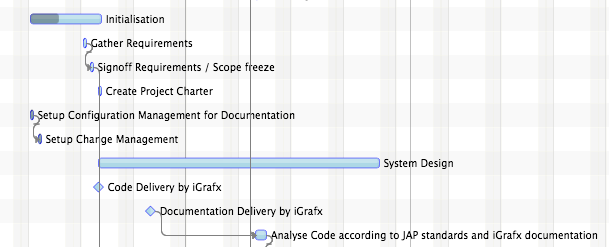

Klasse Layout
java.lang.Object
com.flexganttfx.model.Layout
- Bekannte direkte Unterklassen:
AgendaLayout,ChartLayout,GanttLayout
Each row and each inner line of a row are associated with a layout. The
layout influences several aspects during rendering and editing of activities.
Additionally several of the system layers used to draw the row background
also utilize the layout information.
The following layout types are supported:
- GanttLayout: activities are laid out horizontally below the timeline.

- AgendaLayout: activities are laid out vertically next to a time scale
displaying the time of day. Hour lines are drawn in the background.

- ChartLayout: activities are laid out as bars below the timeline. Chart
lines are drawn in the background.

- Seit:
- 1.0
- Siehe auch:
-
Eigenschaftsübersicht
EigenschaftenTypEigenschaftBeschreibungfinal DoublePropertyReturns the property used to specify a padding that will be added to the top and the bottom of a row or an inner line. -
Konstruktorübersicht
Konstruktoren -
Methodenübersicht
Modifizierer und TypMethodeBeschreibungfinal doubleReturns the value ofpaddingProperty().abstract booleanDetermines if the UI should be able to show a horizontal cursor line.final DoublePropertyReturns the property used to specify a padding that will be added to the top and the bottom of a row or an inner line.final voidsetPadding(double padding) Sets the value of thepaddingProperty().
-
Eigenschaftsdetails
-
padding
Returns the property used to specify a padding that will be added to the top and the bottom of a row or an inner line.- Seit:
- 1.0
- Siehe auch:
-
-
Konstruktordetails
-
Layout
public Layout()
-
-
Methodendetails
-
paddingProperty
Returns the property used to specify a padding that will be added to the top and the bottom of a row or an inner line.- Gibt zurück:
- the padding property
- Seit:
- 1.0
- Siehe auch:
-
getPadding
public final double getPadding()Returns the value ofpaddingProperty().- Gibt zurück:
- the padding value
- Seit:
- 1.0
-
setPadding
public final void setPadding(double padding) Sets the value of thepaddingProperty().- Parameter:
padding- the new padding value- Seit:
- 1.0
-
isSupportingHorizontalCursorLine
public abstract boolean isSupportingHorizontalCursorLine()Determines if the UI should be able to show a horizontal cursor line. Currently only theChartLayoutand theAgendaLayoutsupport this.- Gibt zurück:
- true if a horizontal cursor line makes sense
- Seit:
- 1.4
-